UML 是在多种面向对象建模方法的基础上发展起来的建模语言，主要用于软件密集型系统的建模。
UML 作用：业务建模，需求建模，系统建模，架构建模，数据建模，code建模，模型仿真等。
uml 图根据职责类型可以分为结构性（structure）和行为性（behavior）两类。
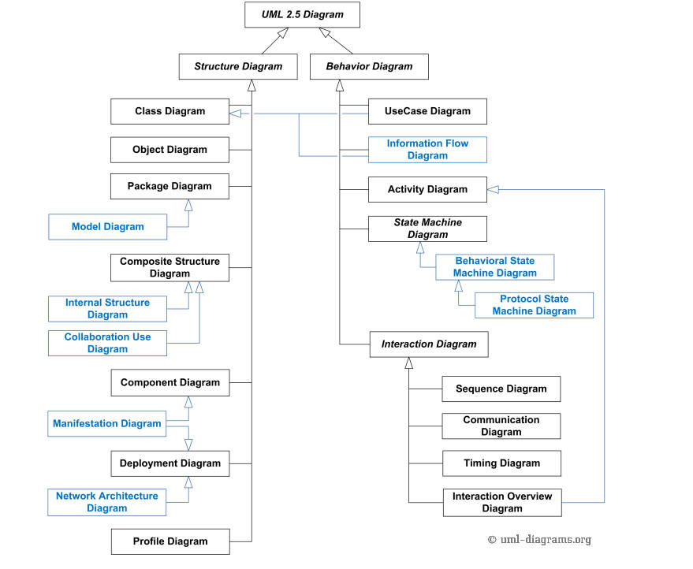
UML 建模工具非常多，选取自己熟悉顺手的即可。
用例图（use case diagram）是一种 uml 行为图。
用例图（use case diagram）是从用户的角度描述系统的功能，一般用于分析产品需求和行为。是分析、设计、以及测试的重要依据。
用例图包含两个基本元素执行者（actor）和用例（use case）。
执行者一般用人形符号表示，符号下面标出角色名，用例用椭圆形符号表示，用例名写在椭圆中或者椭圆底部。
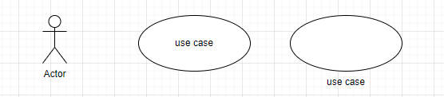
例如一个邮件系统，用例图如下。
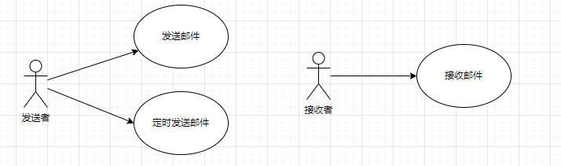
绘制用例图的关键在于识别系统角色，识别用例。
执行者和用例之间是一种关联关系，表示角色触发用例的关系。
用例之间也会存在某种关系。
泛化(generalization)：泛化关系是一种继承关系，子用例将继承基用例的所有行为，关系和通信关系，也就是说在任何使用基用例的地方都可以用子用例来代替。泛化关系在用例图中使用空心的箭头表示，箭头方向从子用例指向基用例。
扩展(extend)： extend关系是对基用例的扩展，基用例是一个完整的用例，即使没有子用例的参与，也可以完成一个完整的功能。extend 的基用例中将存在一个扩展点，只有当扩展点被激活时，子用例才会被执行。 extend关系在用例图中使用带箭头的虚线表示(在线上标注 <<extend>> )，箭头从子用例指向基用例。
包含(include)： include 为包含关系，当两个或多个用例中共用一组相同的动作，这时可以将这组相同的动作抽出来作为一个独立的子用例，供多个基用例所共享。因为子用例被抽出，基用例并非一个完整的用例，所以 include 关系中的基用例必须和子用例一起使用才够完整，子用例也必然被执行。include 关系在用例图中使用带箭头的虚线表示(在线上标注 <<include>> )，箭头从基用例指向子用例。
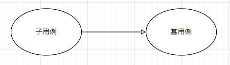
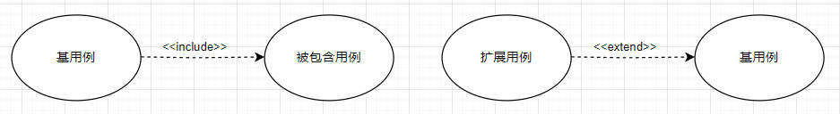
联通客户响应OSS。系统有故障单、业务开通、资源核查、割接、业务重保、网络品质性能等功能模块。现在我们抽出部分需求做为例子讲解（例子摘抄自：uml.org.cn。
需求1：客户响应用户和国际客服可以进行割接通知查询，在页面上有骨干割接查询、省间割接查询、省级割接查询的Tab。
分析：可以很容易看出割接查询和不同的割接子查询Tab之间是继承的关系，所以此处用泛化。用户和客户响应、国际客服也是继承的Actor关系。
需求2：客户响应用户和国际客服可以查看某条割接通知信息，可以在页面上导出割接信息Excel格式，可以查询和该条割接相关联的故障单信息。
分析：因为导出割接和查看相关联的故障单信息都是可选的，就是说我查看割接的时候，也可以不进行这些操作，所以这里用extend关系。也就是导出割接和查看故障单信息扩展了查看割接信息。
需求3：客户响应用户可以以网管系统为来源创建割接通知，在创建割接通知时可以保存为草稿，也可以直接发布割接通知。
分析：由于创建割接通知时，发布割接通知可以同时进行，也可以先存为草稿，所以发布割接是可选的，用extend就比较合适。也就是发布割接扩展了创建割接通知。
需求4：用户在进行业务开通、发布割接通知、发布重保通知及相关跨省的业务时需要进行数据分发。
分析：由于业务开通、重保、割接及其它跨省的业务都需要用到数据分发用例，我们可以将数据分发用例单独抽出来，供各业务使用，这里用include就比较合适。实际的系统中数据分发也是单独抽出来用jms和webservice实现的接口服务。
uml 活动图通常用于约为流程建模，用于对单个用例或某个场景逻辑建模。
活动图的主要建模元素如下
1、动作（活动）
工作流过程种命令的执行或活动的执行。
2、始终状态
活动图的开始用开始状态表示，终止用结束状态表示。一个活动图只有一个开始状态，可能有多个结束状态。
3、动作流
活动之间、活动与状态之间的转换，用实线箭头表示。
4、分支与合并
活动图中经常会遇到多分支的情况，根据条件的不同一条分支会变成两条，也会在某一节点处，两条分支也会合并成一条分支。
5、分叉与汇合
分叉：用于将一个控制流分为两个或多个并发运行的分支。 汇合：用于将两个或多个控制流合并到一起形成一个单向的控制流，符号与分叉相同。
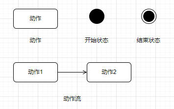
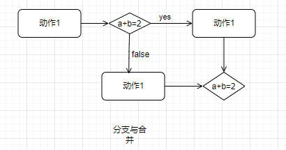
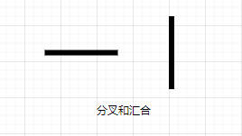
6、对象和对象流
活动图描述某个对象时，用矩形框表示，对象和动作之间的关联用虚线箭头表示。
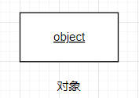
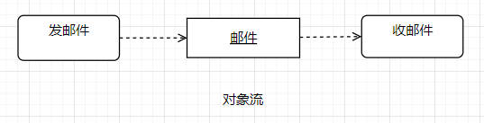
7、泳道
复杂的活动图还会用泳道表示，例如为了表示活动是由哪些人或者哪些部门负责完成。
例如一个购物 app 的活动图如下。
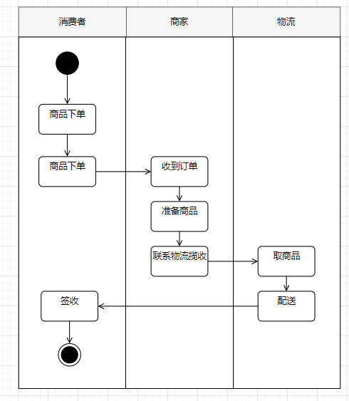
时序图（Sequence Diagram），亦称为序列图、循序图或顺序图，是一种UML交互图。它通过描述对象之间发送消息的时间顺序显示多个对象之间的动态协作。
时序图是一个二维图，横轴表示对象，纵轴表示时间，消息在各对象之间横向传递，依照时间顺序纵向排列。
时序图的作用。
1、角色（Actor）
与用例图执行者含义一致，用人形符号表示，一般表示
2、对象（Object）
系统类的一个实例对象。命名方式比较多。
对象:类:类对象时序图一般是自上而下的，对象位于图顶部，对象间的左右位置顺序并不重要，通常应遵循：
3、生命线（LifeLine）
在时序图中表示为从对象图标向下延伸的一条虚线，表示对象存在的时间。
4、控制焦点（Focus of Control）
又称为激活期，表示时间段的符号，在这个时间段内对象将执行相应的操作。它可以被理解成C语言语义中一对花括号 { } 中的内容；用小矩形表示。
5、消息（Message）
消息一般分为同步消息（Synchronous Message），异步消息（Asynchronous Message）和返回消息（Return Message）。
同步消息的发送者把控制传递给消息的接收者，然后停止活动，等待消息的接收者放弃或者返回控制。用来表示同步的意义；
异步消息发送者通过消息把信号传递给消息的接收者，然后继续自己的活动，不等待接受者返回消息或者控制。异步消息的接收者和发送者是并发工作的。
返回消息表示从过程调用返回。
6、自关联消息
表示方法的自身调用或者一个对象内的一个方法调用另外一个方法。
7、组合片段
组合片段用来解决交互执行的条件和方式，它允许在序列图中直接表示逻辑组件，用于通过指定条件或子进程的应用区域，为任何生命线的任何部分定义特殊条件和子进程。组合片段共有13种，名称及含义如下：
（1）、Opt（选项）：包含一个可能发生或可能不发生的序列。可以在临界中指定序列发生的条件。
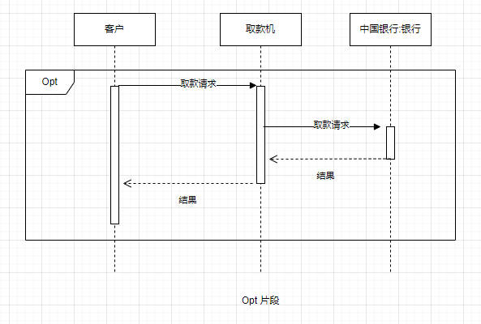
（2）、Alt（抉择）：包含一个片段列表，这些片段包含备选消息序列。在任何场合下只发生一个序列。在任何场合下只发生一个序列。
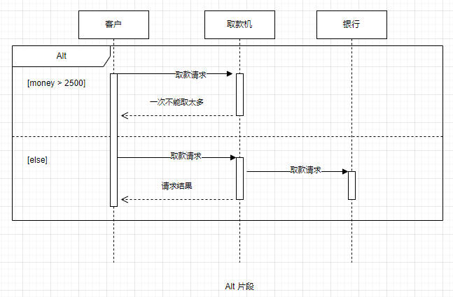
（3）、Loop（循环）：片段重复一定次数，可以在临界中指示片段重复的条件。Loop 组合片段有 Min 和 Max 属性，他们指示片段可以重复的最小和最大次数，默认值无限制。
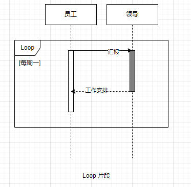
（4）、Par（并行）：并行处理，片段中的事件可以交错。
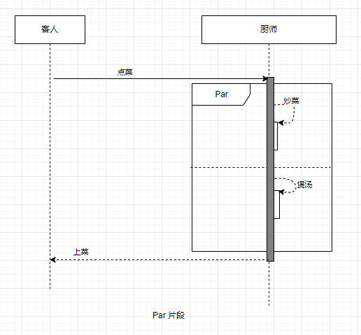
类图是一种 uml 结构图。
关于类图可以参考这篇文章：uml 类图
对象图（obejct diagram）是对象建模的关键，用来描述系统中的对象及其关系的图。
在众多的表面对象中寻找构成它们的基本对象，这是发现规律和共性的关键，是简化问题进而解决问题的必由之路。
对象图用于提供系统中的实例及其相互关系的快照。通过将类图中的模型元素实例化，就可以了解系统在某一时刻的行为。
对象图的表示方法，就是类图中的对象表示，所以只有对象而无类的类图就是一个对象图。
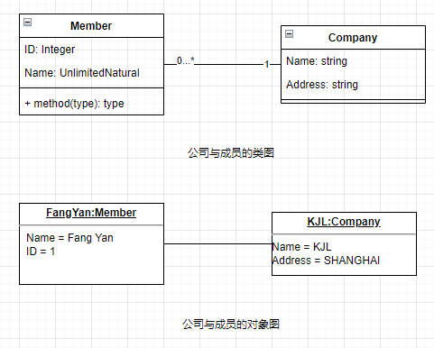
为了简单地表示出复杂的类图，可以把类组合成包（package）。一个包是 UML 上有逻辑关系的元件的集合。
包的依赖关系：如果另一个的包 B 改变可能会导致一个包 A 改变，则包 A 依赖包 B。
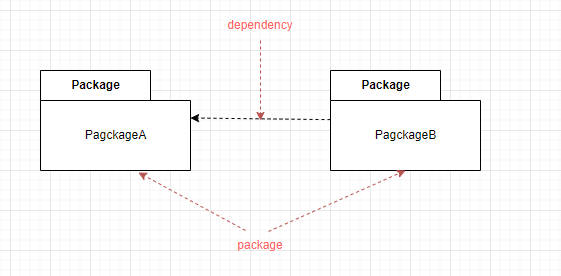